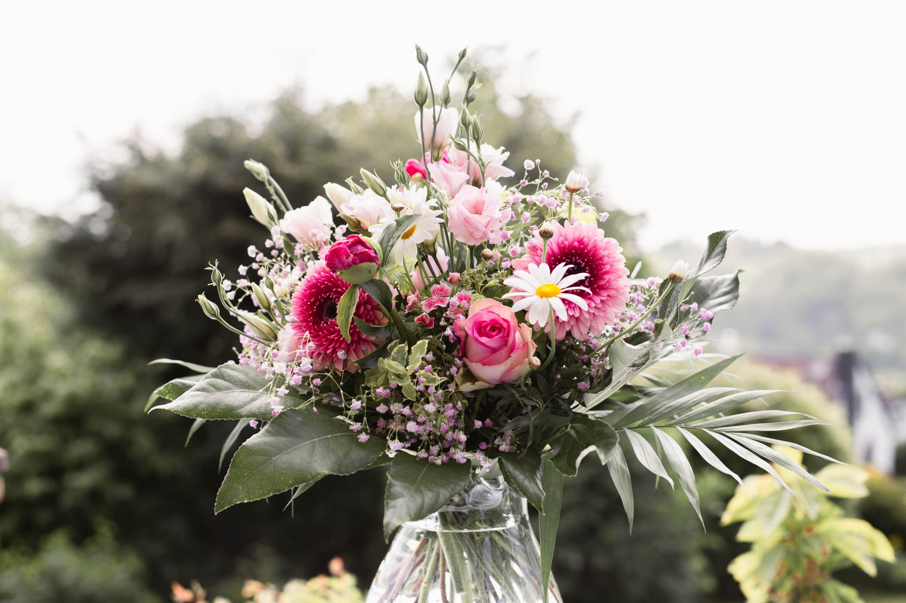
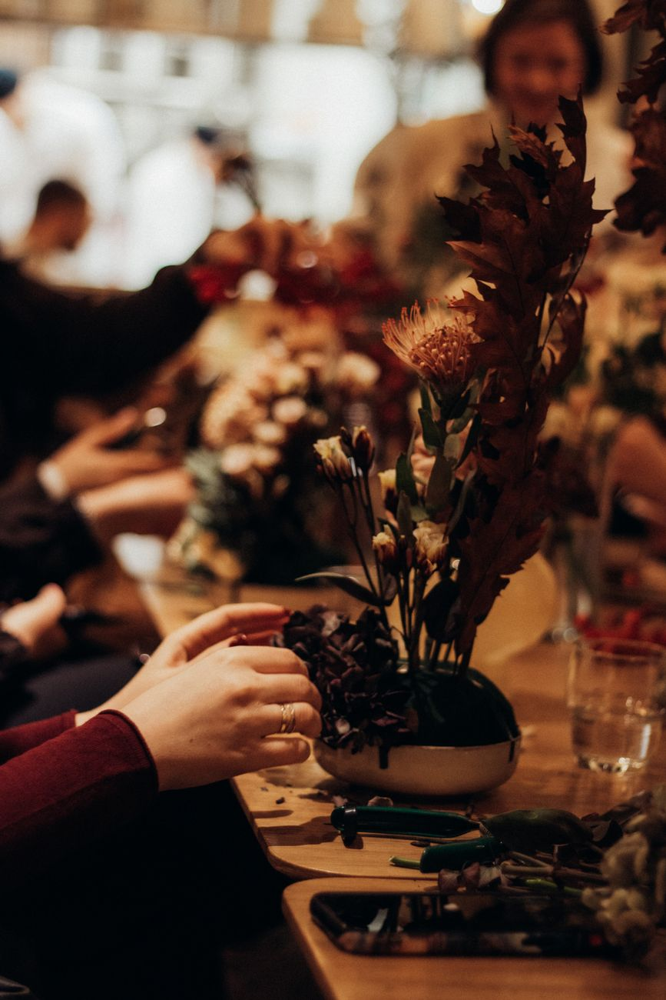
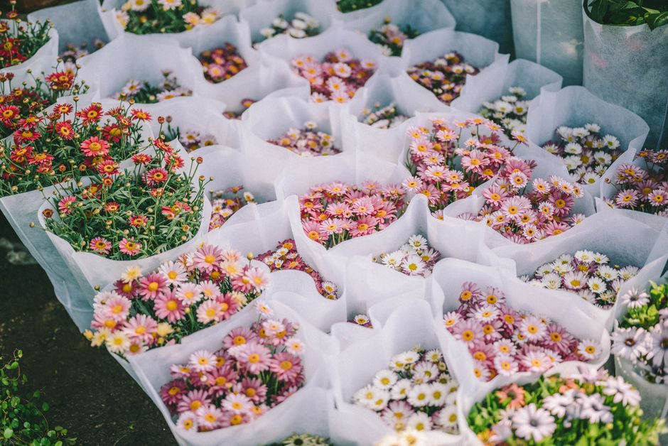
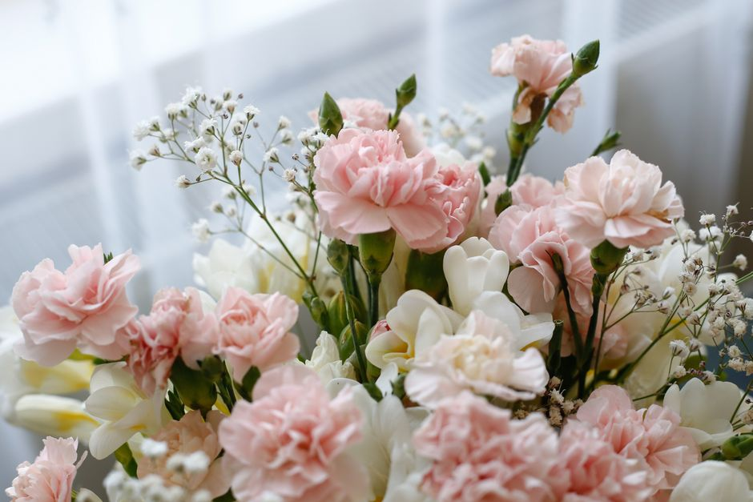
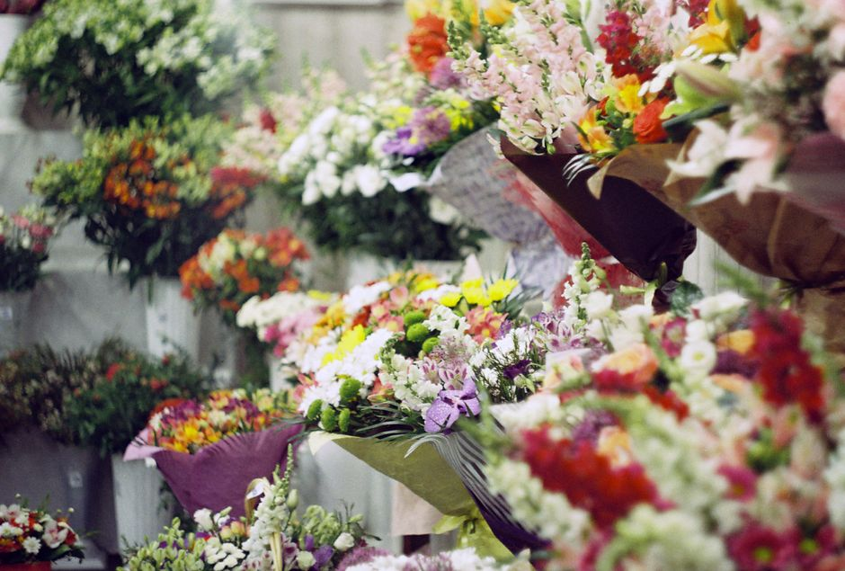
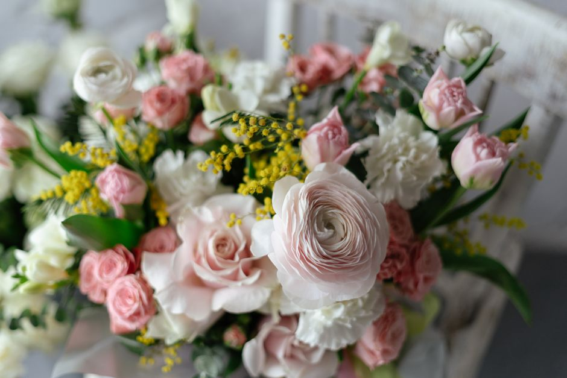
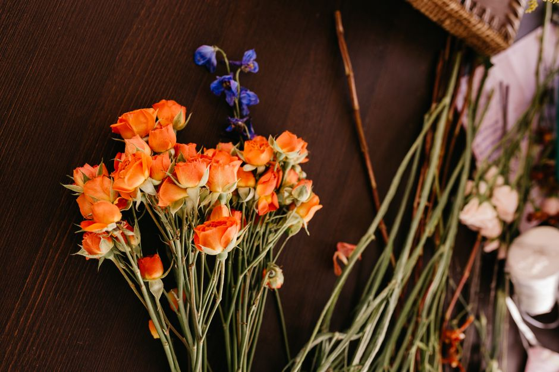
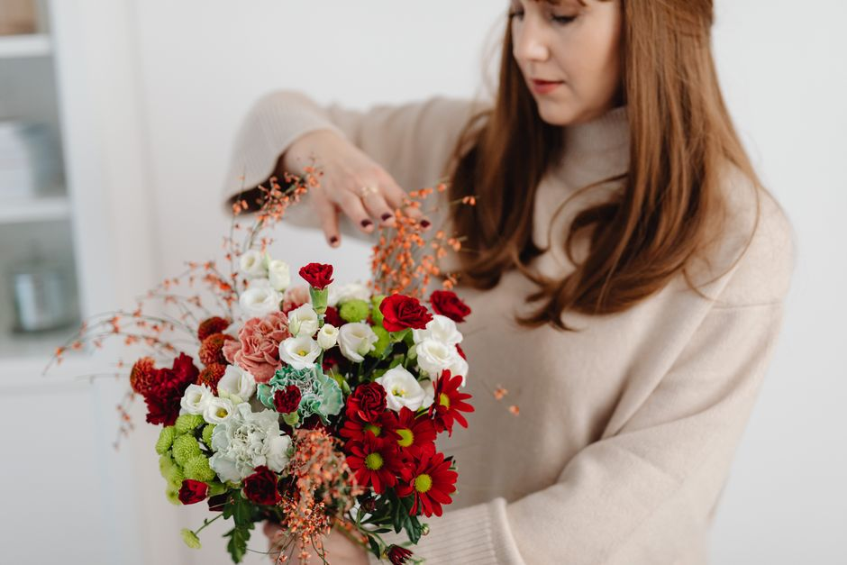

Geburtstag
Fröhliche, farbenfrohe Sträuße, die zum Charakter des Geburtstagskinds passen.
Floristik aus Kiel


Seit Jahren beziehen wir unsere Blumen mehrmals wöchentlich frisch vom Großmarkt und regional von Gärtnereien aus dem Kieler Umland. Jeder Strauß wird bei uns von Hand gebunden, nichts kommt fertig aus dem Kühlhaus.
Wir nehmen uns Zeit, fragen nach dem Anlass und beraten ehrlich, welche Sorten gerade in der besten Saison sind. So bekommen Sie Blumen, die lange halten und genau die Stimmung treffen, die Sie sich wünschen.
Auf Deutsch · English · Español
Fröhliche, farbenfrohe Sträuße, die zum Charakter des Geburtstagskinds passen.
Romantische Arrangements mit Rosen und feinen Akzenten für den besonderen Moment.
Wechselnde Sträuße mit dem, was gerade blüht, von Tulpen im Frühjahr bis Dahlien im Spätsommer.
Aufmunternde Sträuße in warmen Farben, gern auch direkt ins Krankenhaus geliefert.
Zarte Sträuße in Rosa, Blau oder Naturtönen zur Begrüßung des neuen Familienmitglieds.
Kränze, Gestecke und Trauersträuße, würdevoll gebunden und kurzfristig lieferbar.
Brautstrauß, Anstecker und Tischschmuck, in einem persönlichen Termin geplant.
Regelmäßiger Blumenschmuck für Empfang, Praxis oder Büro auf Wunsch im Abo.
Robuste Grünpflanzen und blühende Topfpflanzen samt Pflegetipps für zuhause.
Langlebige Trockensträuße und Kränze, die monatelang schön bleiben.
Schalen und Gestecke zu Ostern, Advent oder als dekorativer Tischschmuck.
Zustellung in Kiel und Umgebung, bei Eingang bis 12 Uhr meist noch am selben Tag.






An Feiertagen können die Zeiten abweichen.
Schreiben Sie uns Ihren Anlass oder rufen Sie an. Wir beraten Sie zu Sorten, Farben und Lieferung und binden Ihren Strauß frisch.